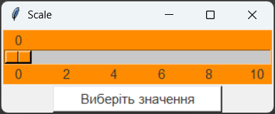
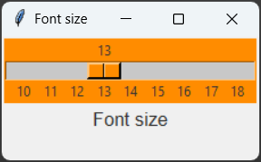
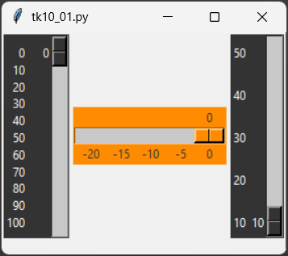
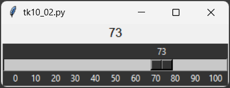

Віджет Scale – клас повзунка (шкала). Цей віджет дозволяє користувачеві вибирати числове значення, переміщаючи повзунок вздовж горизонтальної або вертикальної шкали. Віджет Scale може бути використаний для вибору значень у певному діапазоні, наприклад, для налаштування гучності звуку, вибору кольору або встановлення розміру шрифту.
Загальний синтаксис:
name = Scale(window, options)
де, name – ім'я шкали, window – ім'я вікна, на якому розташовується шкала, options – параметри шкали.
Властивості Scale:
| Властивість | Значення |
|---|---|
| width | Ширина шкали в пікселях. |
| background (bg) | Колір фону шкали. |
| foreground (fg) | Колір тексту на шкалі. |
| borderwidth (bd) | Ширина рамки навколо шкали в пікселях. |
| state | Стан шкали. Може мати значення: "normal" або "disabled". |
| justify | Вирівнювання тексту на шкалі. Може мати значення: "left", "right", "center". |
| relief | Стиль рамки навколо шкали. Може мати значення: "flat", "raised", "sunken", "groove", "ridge". |
| overrelief | Стиль рамки шкали при наведенні на неї. Може бути: "flat", "raised", "sunken", "groove", "ridge". |
| font | Шрифт тексту на шкалі. Може бути заданий у вигляді рядка, наприклад: "Arial 12", або у вигляді кортежу, наприклад: ("Arial", 12). |
| from_ | Початкове значення шкали. |
| to | Кільцеве значення шкали. |
| tickinterval | Інтервал між мітками на шкалі. |
| resolution | Роздільна здатність шкали. Вказує, на які кроки буде розбитий діапазон значень шкали. Наприклад, якщо from_=0, to=10 і resolution=1, то шкала буде мати значення 0, 1, 2, ..., 10. Якщо resolution=0.5, то шкала буде мати значення 0, 0.5, 1, 1.5, ..., 10. |
| orient | Орієнтація шкали. Може мати значення: "horizontal" (горизонтальна) або "vertical" (вертикальна). |
| length | Довжина шкали в пікселях. |
| label | Текст, який відображається над шкалою. |
| variable | Змінна Tkinter, яка пов'язана зі шкалою. Значення цієї змінної буде оновлюватися при переміщенні повзунка на шкалі. |
Властивість variable дозволяє зв'язати шкалу з певною змінною Tkinter, такою як IntVar або DoubleVar. Це дозволяє отримувати поточне значення шкали та використовувати його в програмі.
Функції Scale:
Функції Scale дозволяють виконувати різні операції з шкалою, такі як отримання значення, встановлення значення та інші.
| Функція | Значення |
|---|---|
| get() | Повертає поточне значення шкали. Це значення буде відповідати позиції повзунка на шкалі та може бути використано для виконання певних дій у програмі. |
| set() | Встановлює значення шкали. Ця функція дозволяє програмно змінити позицію повзунка на шкалі. |
Важливо пам'ятати, що при використанні властивості variable для зв'язування шкали з певною змінною Tkinter, необхідно створити цю змінну перед створенням шкали. Зазвичай використовуються типи змінних IntVar або DoubleVar, залежно від того, чи потрібні цілі числа або числа з плаваючою комою.
1. Розмістіть у вікні шкалу від 0 до 10 з інтервалом 2 та кнопку, після натиснення на яку обране значення відображається на кнопці.
from tkinter import *
root = Tk()
def get_value():
button['text']=scale.get()
scale = Scale(root, orient=HORIZONTAL, bg="#FF8c00", fg="#333333", font="Arial 11", length=300, from_=0, to=10, tickinterval=2, resolution=2)
scale.pack()
button = Button(root, bg="white", fg="#333333", font="Arial 11", width=20, text="Виберіть значення", command=get_value)
button.pack()
root.mainloop()

2. Розмістимо у вікні горизонтальну шкалу від 10 до 18 з інтервалом 1 та мітку з текстом "Font size". Вибране значення на шкалі має змінювати розмір тексту мітки: якщо обрано 14, то розмір тексту теж 14 і т.д.
from tkinter import *
root = Tk()
root.geometry('227x110')
# ФУНКЦІЯ ОБОВ'ЯЗКОВО ПОВИННА ПРИЙМАТИ АРГУМЕНТ ДЛЯ ВЗАЄМОДІЇ З ПОВЗУНКОМ!!!)
def size(val):
label.config(font=("Arial", val))
scale = Scale(root, orient=HORIZONTAL, length=220, bg="#ff8c00", fg="#333333", from_=10, to=18, tickinterval=1, resolution=1,command=size)
scale.grid(row=0, column=0)
label = Label(root, text='GUI', fg="#333333", font=("Arial", 10))
label.grid(row=1, column=0)
root.mainloop()

1. Створіть повзунки за зразком 1. Файл з кодом програми збережіть у власну папку з іменем tk_10_01.py.
Зразок 1

2. Створіть пусту мітку та повзунок, який змінює текст у мітці на обране значення на шкалі - зразок 2. Якщо на повзунку обрано значення 89, то у мітці має з'явитися число "89". Файл з кодом програми збережіть у власну папку з іменем tk_10_02.py.
Зразок 2

Підказка: для виконання завдання 2 необхідно використати властивість command віджета Scale та функцію, яка буде приймати аргумент (значення шкали) та змінювати текст мітки на це значення.